Each configuration has their own unique characteristic advantages
and disadvantages.
Rotary drones are controlled by varying the thrust and torque of the
rotors. The biggest advantage of rotary drones is that they can
takeoff and land vertically (although admittedly some fixed wing
drones can also do this). This allows the remote pilot to launch in
a small space. Their ability to hover and carry out small airborne
movements, make them ideal for photography, filming and inspections
where precision manoeuvring is needed.
Hybrids
A hybrid drone can fly like a fixed wing drone and it can also hover
like a rotary wing drone. This is the best of both worlds as it
combines the stability and manoeuvrability of a rotary wing drone
with the speed and fuel efficiency of a fixed wing drone.
Although the regulation covers both aero models and drones, there
are some differences between the two.
Aeromodel pilots and drone pilots very often fly for very different
reasons and are motivated by different impulses. Notwithstanding the
differences between aero models and drones, aero models have to
respect the same obligations.
Aero model
Sometimes called remote-controlled aircraft
Typically recreational and tend to be scaled down models of
real aircraft and helicopters
Usually flown in designated sites as part of a club
environment
Are ‘manually flown’ by remotely adjusting the control
surfaces of the model
Drone
Can be used for recreation and commercial operations
Can be flown anywhere that meet the regulatory requirement
Is flown with automated assistance for stabilisation and
navigation
Can fly automatically with a pre-defined set of instructions
Main components of a drone
To understand your manual, the basic principles of flight, axes of
rotation and the parts of the drone that are susceptable to
degrading, you need to know the components of the drone.
In the diagram below you can see the
components of a fixed wing drone
Press on the top-right corner of each diagram to enlarge
In the diagram below you can see the
components of a rotary drone
Press on the top-right corner of each diagram to enlarge
The most susceptible components!
Before every flight you should check your drone to
make sure that its components are in good working order. Flying a
drone that has degraded or defective components can comprise safety.
These are the components that are most susceptible to defects:
Navigate the slides to see the content
Basic principles of flight
To understand how flight works, it is important to understand the
forces that act on a drone as it moves through the air.
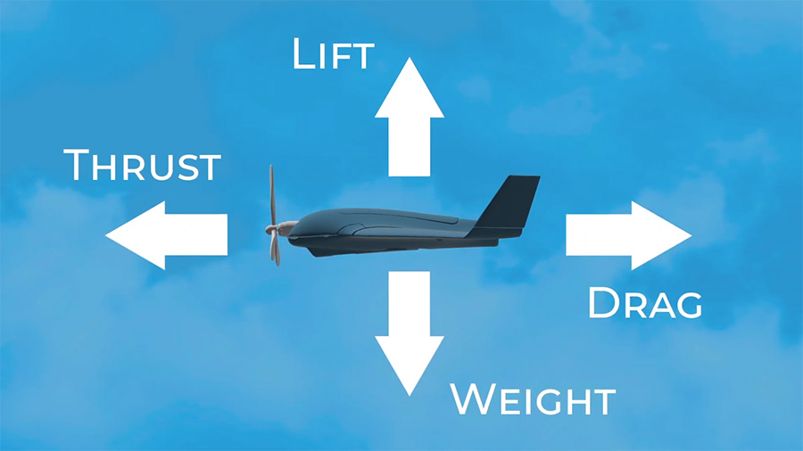
Several forces act on a drone while it is in flight
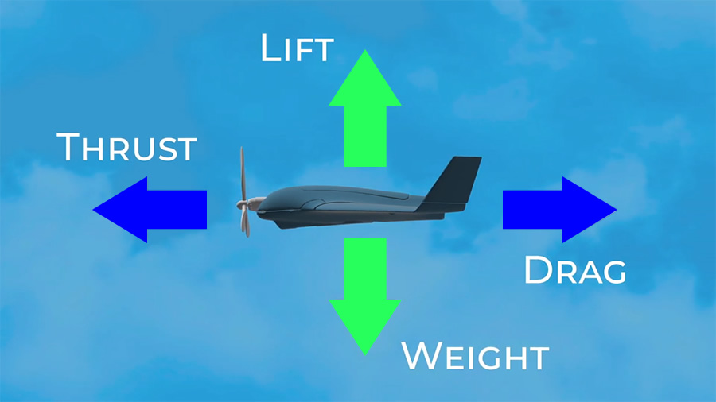
To stay airborne and stable (Newton’s laws of equal and
opposite reactions) these forces have to balance each other
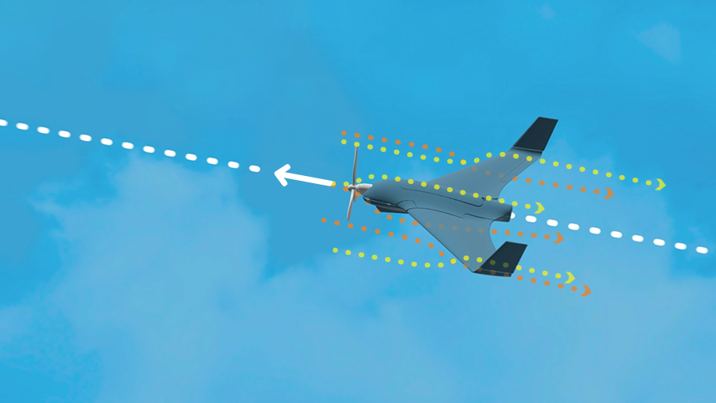
Flight is made possible when air comes in contact with
wings/propellers and lift is generated.
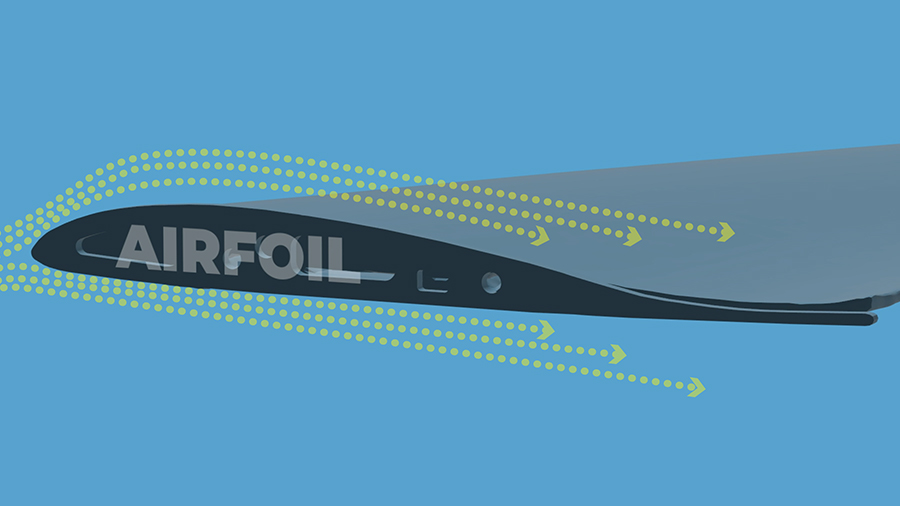
With fixed wing drones, lift is generated by the angle of the
wing and the motion of the air.
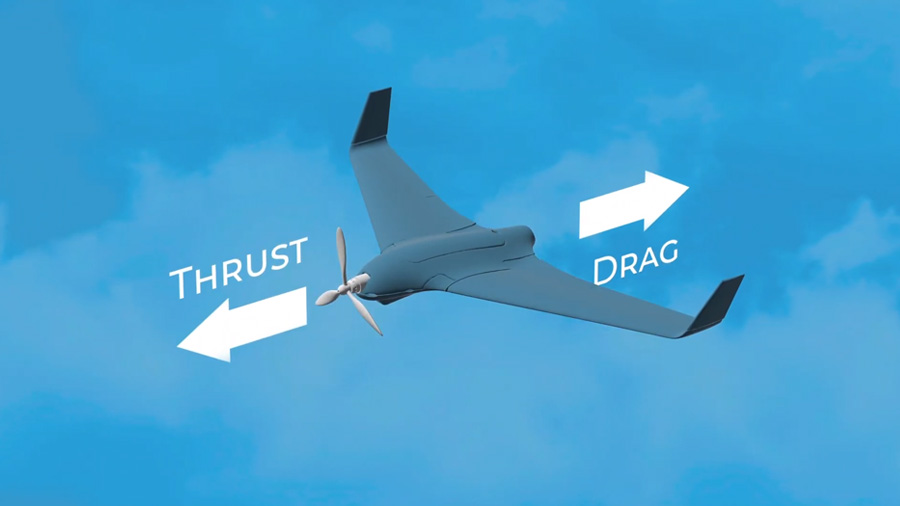
As the aircraft moves forward, drag is created, which has to
be compensated by the thrust;
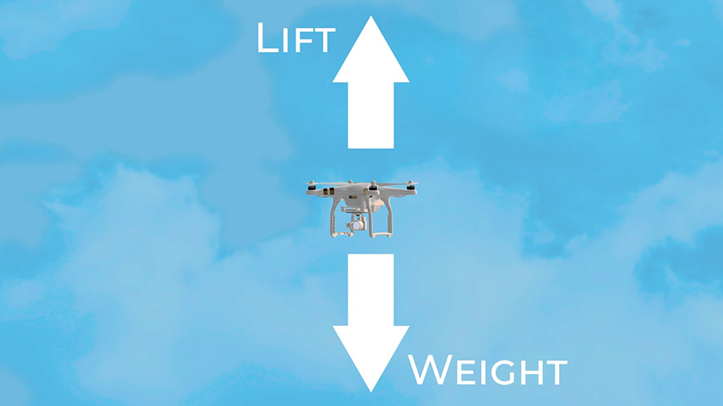
With rotor wing drones, lift is generated solely by the
propeller. In this case, the weight is then directly
compensated for by the lift generated by the propeller;
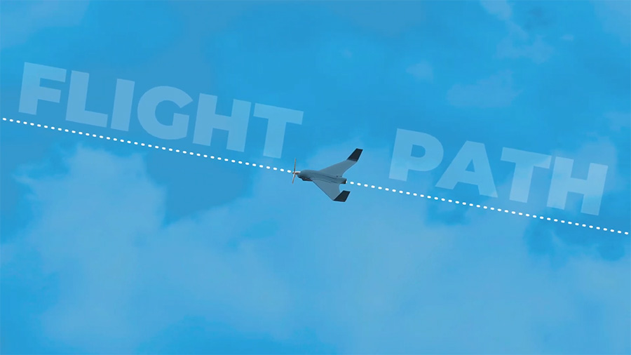
These four forces can be increased or decreased by adjusting the
control surfaces or by the engine power. It is by adjusting
these forces that you are able to control the flight path of
your drone.
Axes of rotation
Now that we have looked at the principles behind how drones fly, we
are going to consider how the drone is able to move in any
direction. It does this by rotating about in three dimensions. This
is called the drones axes of rotation.
Fixed wing drone axes of rotation
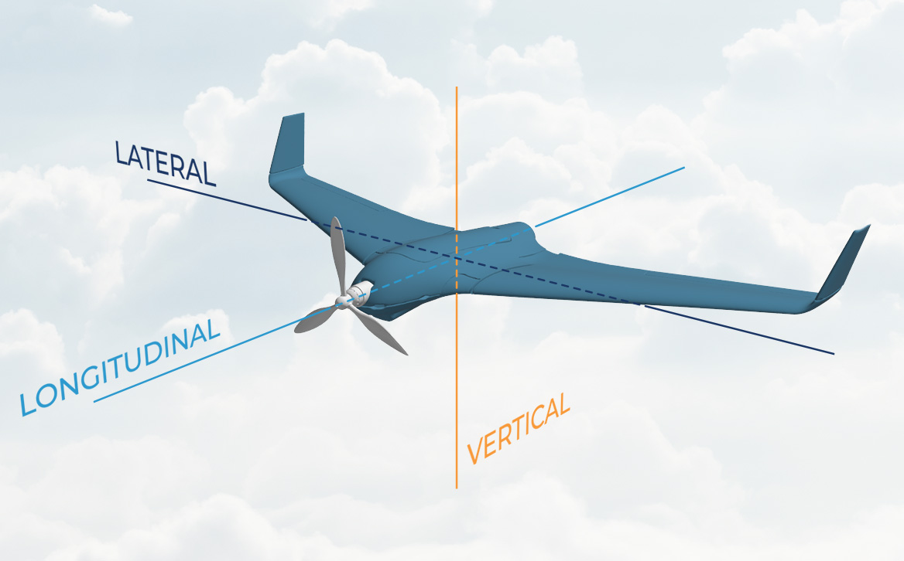
Rotary drone axes of rotation
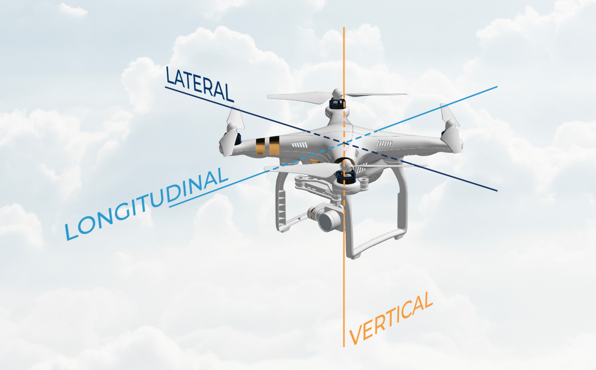
The video below explains the axes of rotation:
Command and Control
Overview
Remember that the formal term for a drone is a UAS, which stands for
Unmanned Aerial System. It includes both the vehicle (i.e. the
drone), called the UAV (Unmanned Aerial Vehicle) and the command,
which is also sometimes called the RCS (Remote Control Station).
The command unit is how the remote pilot ‘flies’ the drone. The
command inputs are coded and transmitted to the drone via
electromagnetic waves. The drone receives the electromagnetic waves,
decodes them and sends the command signals to the computer and
servos to control the motion.
Often, the drone also transmits useful information (e.g. speed,
altitude, position) back to the command via the same channel. This
process is called ‘telemetry’.
Datalink frequencies and spectrums
Many drones are using frequencies of around 2.4 GHz and 5.8 GHz.
These frequencies propagate in line of sight, which means that the
command must ‘see’ the drone. So if there is an obstacle like tree
or building in-between, the signal could be lost.
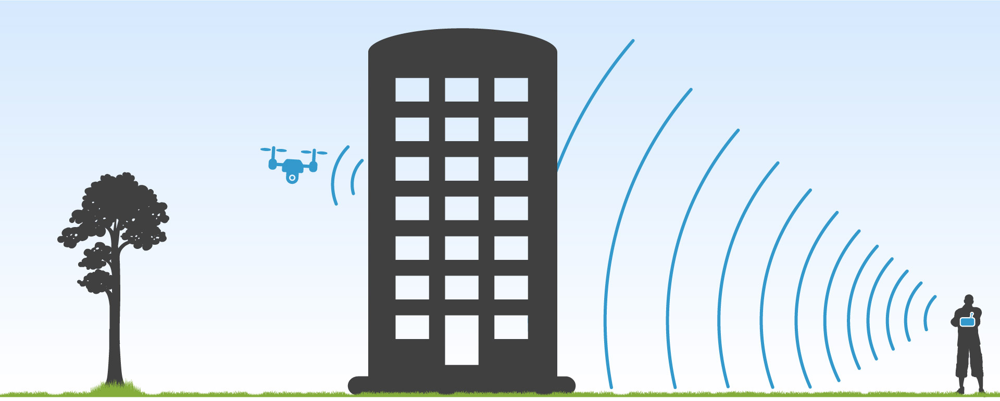
To insure the optimum transmission of the signals from the command,
the antennas (if equipped) should be positioned in the way the
manufacturer’s user manual indicates. This is usually with an angle
of between 60° and 90°, without crossing the antennas.
Good examples for the antennas position:
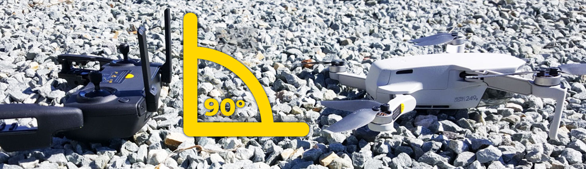
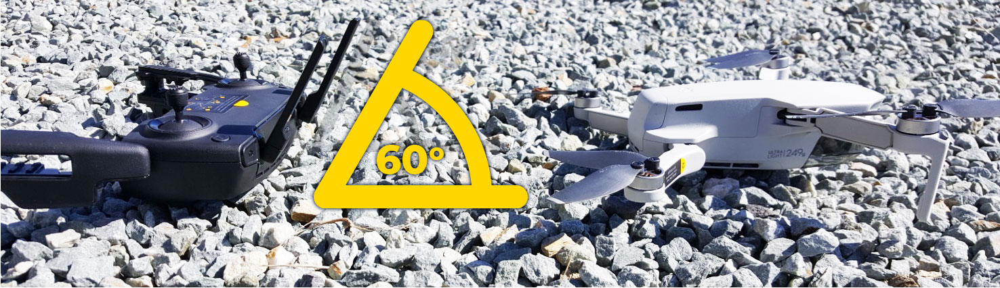
Bad example of antenna positioning:
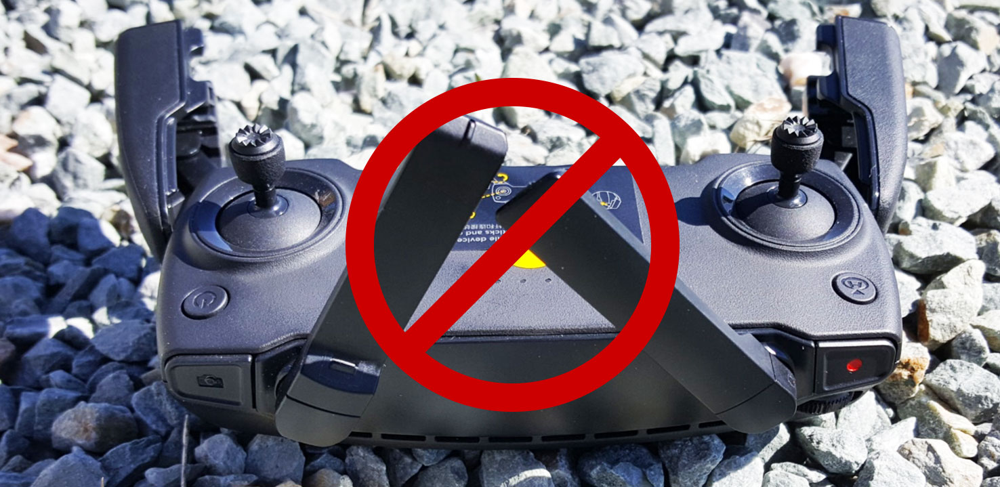
The frequency selection is made automatically by the system to
minimise interference and to maximise the system performance. Some
command devices allow you to manually select the frequency to be
used, however, this option is more typically used for quite specific
applications and its use is not recommended.
The command controls
The controls on the command depend on the manufacturer and
technology used.
The following mode (The so-called MODE 2) is used on the
vast majority of commercial drones.
Other modes may also be selected depending on your personal
preference.
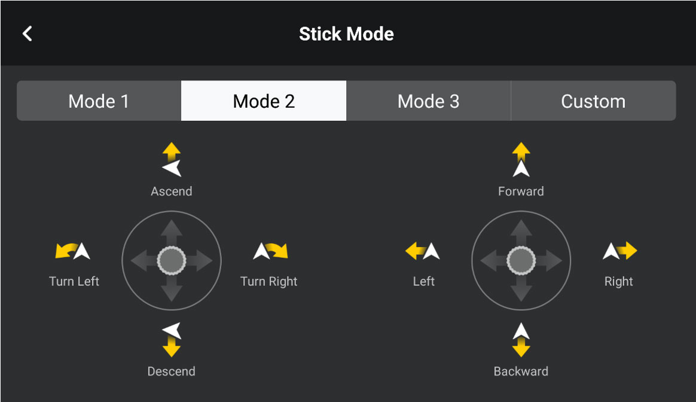
Flight modes
Modern drones, whether they are toys or not, are assisted by a
computer and sensors. This helps considerably to stabilise the
flight under various circumstances (e.g. in windy conditions). But
remember that if one or more of these assistance systems fail on
your drone, it will be much more difficult to fly!
Aeromodels, which are more basic and lack such assistance, are
usually much more difficult to fly.
There are a number of different modes that a drone can be flow in:
Select a flight mode tab below to learn more
Flight mode: STABILISED
this mode is widely used by default on commercial drones. In
this mode, the stick control, when left in a neutral position,
keeps the drone in its current position and/or stable
attitude.
Flight mode: AUTOMATIC (≠ autonomous)
this mode is used to program in advance a pre-defined flight
path. The remote pilot is always capable of overriding the
pre-defined instructions to take back the controls at anytime.
Flight mode: AUTONOMOUS (≠ automatic)
in this mode, the pre-programmed drone is acting autonomously,
with no possibility for the remote pilot to intervene.
Autonomous operations are forbidden in the OPEN category,
except for emergency situations.
Flight mode: MANUAL
in this mode, the pilot is not assisted by any computers or
sensors and the operations are really close to aeromodelism.
Any action on the stick is directly transmitted to the
aeromodel or drone and the pilot has to control all the
aspects of the flight.
Flight mode: RETURN TO HOME
this mode, when available, is of particular importance in
emergency situations. The RTH function is usually activated
when the control signal is lost or of poor quality. It is very
important to check the parameters of this function (especially
the height parameter) prior any flight. This is so that you
are sure that the drone will be able to come back home without
hitting any obstacles enroute.
The Drone Manual
As a drone pilot you must be familiar with the information that is
in the user manual. This is vital for making sure that you
understand all the aspects of your drone that will allow you to fly
safely. Pay particular attention to the:
overview of the main elements of the UAS
limitations (e.g. mass, speed, environmental, duration of battery,
etc.)
controlling the UAS in all phases of flights (e.g. the take-off,
hovering in mid-air, when applicable, flying basic patterns and
landing)
features that affect the safety of flight
setting the parameters of the lost link procedures
setting the maximum height
procedures to load geographical zone data into the geo-awareness
system
procedures to load the UAS operator registration number into the
direct remote identification system
safety considerations:
instructions to secure the payload
precautions to avoid injuries from rotors and sharp edges; and
the safe handling of batteries
Maintenance instructions
Pay special attention to points 7 and
8 as these are essential to ensuring that you are
flying both safely and legally:
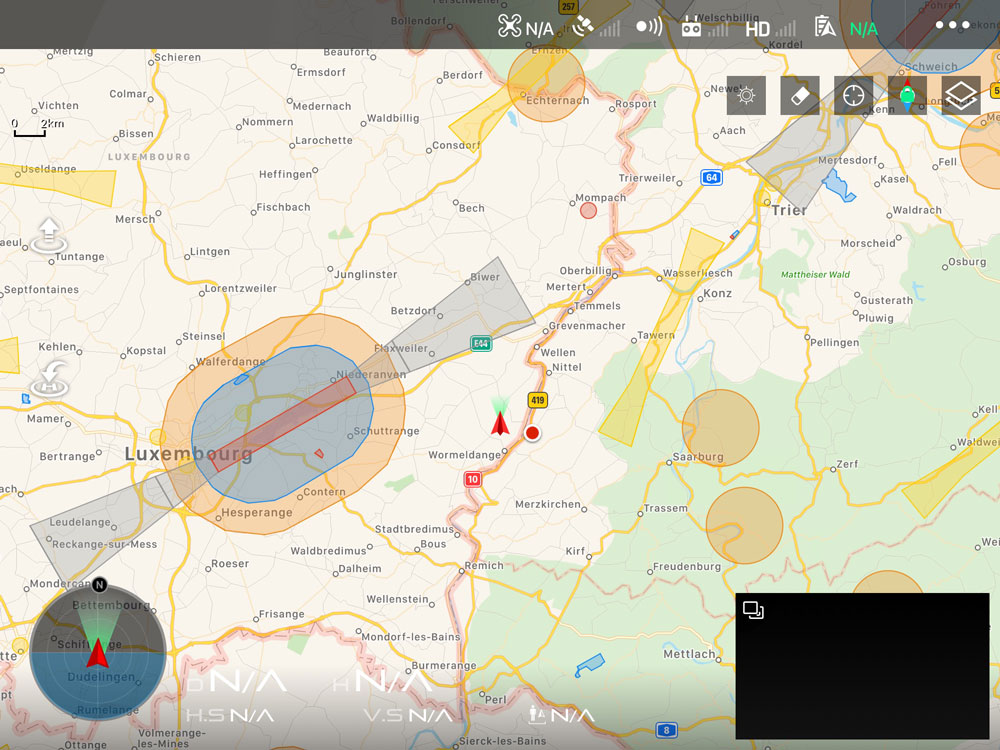
Know the procedures to load geographical zone data into the
geo-awareness system
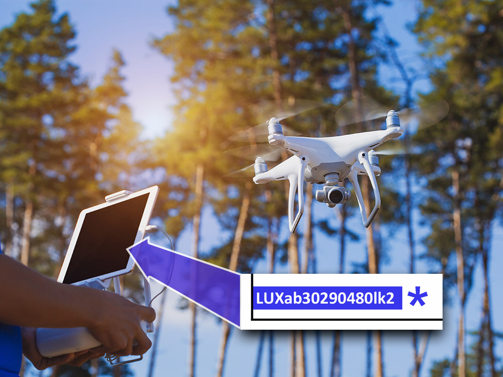
Know the procedures to load the UAS operator registration number
into the direct remote identification system.
Note: both functions will be available mainly on the new C-class
marked drones.
Flying at night
You are allowed to fly your drone at night but to do this, the drone
must have at least one green flashing light on it.
In aviation, of which drone flying is a part, night is clearly
defined. At our latitude
night starts 30 minutes after sunset and continues
until 30 minutes before sunrise.